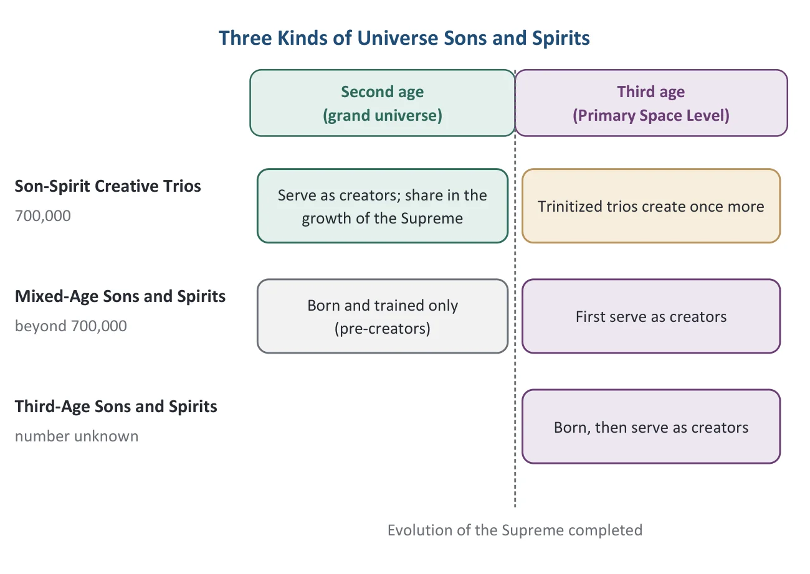

O crescimento dos Filhos e Espíritos do Universo
Original: Apêndice XIII, A evolução dos Filhos e Espíritos do Universo (pp. 340–347)
NESTE CAPÍTULO
Os dois criadores de um universo local, o Filho Criador e o Espírito Criativo, são seres que crescem por meio da experiência. Sadler reúne o que o texto diz sobre a sua natureza e o seu número e formula então uma hipótese: três tipos de Filhos e Espíritos do Universo servirão no Nível Espacial Primário. São os Trios Criativos, que perfeccionaram um universo local e trinitarizaram um terceiro ser; os Filhos e Espíritos de Idade Mista, nascidos agora, mas destinados a tornar-se criadores na próxima idade; e os Filhos e Espíritos da Terceira Idade, que nascerão nessa próxima idade.
1. A natureza dos dois criadores (orig., pp. 340–341)
Quando o Pai e o Filho exploram os desdobramentos da sua união em níveis inferiores ao infinito, surge a ordem dos Michaéis, os Filhos Criadores. O texto diz que, em poder criativo, eles são “potencialmente iguais a Deus, o Pai, e a Deus, o Filho” [7:6.3]. A sua função atual é finita, mas eles podem possuir capacidades suprafinitas ocultas. A passagem sobre a qual Sadler apoia todo este apêndice é a seguinte.
Contudo, em algum momento do futuro distante, nos universos do espaço exterior, ora em mobilização, acreditamos que o enlace entre um Filho Mestre e a Ministra Divina, o Espírito Criativo Materno do sétimo estágio, possa atingir níveis absonitos de serviço, acompanhados do surgimento de coisas, significados e valores novos nos níveis transcendentais de significação última universal.21:6.3
No momento em que um Filho Criador é personalizado, diferencia-se dentro do Espírito Infinito o potencial da sua futura consorte [17:6.3]. Como o Espírito Infinito pode responder sem limite, Sadler considera o potencial de crescimento de um Espírito Criativo como um complemento de medida igual ao do seu Filho.
Os dois criadores estão também ligados ao tempo e ao espaço de modos cruzados. Dentro do seu universo local, o Espírito Criativo é independente do espaço, mas não do tempo [34:3.3].
Um Filho Criador não é limitado pelo tempo, mas é condicionado pelo espaço; …34:3.5
Sadler raciocina que, se os dois criadores alcançarem um dia uma união trinitarizante, o ser produzido não seria limitado nem pelo tempo nem pelo espaço, pelo menos dentro de um domínio designado. Essa seria a condição para o serviço no nível absonito.
2. Quantos Filhos Criadores existem? (orig., pp. 341–342)
Cada vez que um Filho Criador vem à existência, um Espírito Criativo é também diferenciado, de modo que o número de Filhos é igual ao número de Espíritos.
| Passo | Conteúdo | Base |
|---|---|---|
| Dado | Os Filhos Criadores são “mais de setecentos mil”; em outro lugar, “quase um milhão” | 21:1.4, 118:6.2 |
| Dado | O plano de organização do universo prevê 700.000 universos locais | 15:2.10–14 |
| Dado | Os Uniões dos Dias são exatamente 700.000, e nenhum mais está sendo criado | 21:1.4 |
| Dado | 700.000 Inspetores Associados; 7 bilhões de Sentinelas Designadas (uma por sistema local) | 24:4.1, 24:5.1 |
| Inferência | Os sete superuniversos contêm exatamente 700.000 universos locais | Sadler |
| Conclusão | Os Michaéis além de 700.000 terão a sua primeira experiência criativa no espaço exterior | Sadler |
Contudo, no que concerne à quantidade dos Michaéis, além dos setecentos mil, nunca fomos informados de nada.21:1.4
O texto detém-se pouco antes da conclusão. Se um número considerável de Michaéis vai construir os seus primeiros universos no espaço exterior, então Filhos e Espíritos com histórias bem diferentes estarão trabalhando ali lado a lado.

3. Os Trios Criativos Filho-Espírito (orig., pp. 342–346)
O Michael Mestre e o Espírito Criativo do sétimo estágio
Os Trios Criativos Filho-Espírito são os Filhos Criadores e os Espíritos Criativos que perfeccionaram os setecentos mil universos locais desta idade. Sadler chama-os de “Trios” porque acredita que cada par acrescentará mais um criador coordenado por meio da trinitarização.
Um Michael Mestre é um criador que adquiriu, pela experiência, a divindade da supremacia evolucionária acrescida à sua divindade do Paraíso, e que passou por seis estágios de soberania, desde a soberania como vice-regente até a soberania trinitária de um universo estabelecido em luz e vida. O texto deixa o sétimo apenas como “soberania não revelada” [21:3.11]; Sadler conjectura que é o estágio em que o Filho delega o seu governo e parte para o espaço exterior.
Ao funcionar como revelador da vontade da Supremacia, Michael, junto com todos os outros Filhos Mestres, identificou-se eternamente com o Supremo.119:8.7
A sua parceira é um Espírito Criativo que alcançou a sua “carreira não revelada”. Ela passa sucessivamente pela sua diferenciação inicial, por um aperfeiçoamento preliminar no qual se torna conhecedora do espaço, pela organização física do universo local, pela personalização na época da criação da vida, pela elevação à co-soberania depois das auto-outorgas e pelo sexto estágio em luz e vida [17:6]. Sadler imagina o sétimo estágio como aquele em que ela se torna plenamente pessoal e parte com o seu parceiro para o espaço exterior.
Dois crescimentos em ângulo reto
A mais bela percepção de Sadler é a de que os dois crescimentos estão em ângulo reto. O Filho Criador é uma pessoa desde o início, e a sua experiência é “vertical”: ele desce do ser um com Deus em divindade ao ser um com o homem em natureza. O Espírito Criativo começa como uma focalização pré-pessoal do Espírito Infinito e eleva-se à verdadeira personalidade à semelhança de um Espírito Mestre; a sua experiência é “horizontal”. O crescimento que a natureza de um impede é exatamente o crescimento que o outro alcança.

Juntos, os dois crescimentos abrangem quase toda a gama de crescimento aberta na idade presente. Sadler raciocina, portanto, que um par que perfeccionou um universo local terá a capacidade de expressar, por meio da trinitarização, até mesmo essa plenitude experiencial.
Criação e trinitarização
No início da história de um universo local, o Filho e o Espírito fazem surgir uma Brilhante Estrela Matutina, Gabriel. É um ato criativo completo, único em cada universo local, mas não é uma união trinitarizante. Nessa época, o Filho ainda não havia feito as suas auto-outorgas e o Espírito estava no seu quarto estágio, de modo que Gabriel expressa apenas as capacidades que os dois criadores então possuíam. O texto também diz que ele é “consideravelmente limitado em atributos de Deidade” [33:4.2]. A trinitarização é outra coisa. O Pai e o Filho puderam fazer surgir apenas uma Deidade igual a eles próprios, o Agente Conjunto, e por esse ato os dois foram unidos como o Pai-Filho [22:7.3]. Sadler sustenta que, se um Michael Mestre e um Espírito do sétimo estágio se unirem desse modo, aparecerá um descendente coordenado e os dois se tornarão um “Filho-Espírito”.
O terceiro ser
Alguns sustentam que as idades do futuro testemunharão alguma forma mais próxima de união entre os Filhos Criadores e as Ministras Divinas coligadas suas; é mesmo possível que uma tal união criadora possa manifestar alguma expressão nova de identidade de criador-associado de uma natureza última.56:7.7
Assim como o Espírito Infinito é a “conseqüência supra-somatória” da união do Pai e do Filho [10:2.5], o terceiro ser será provavelmente mais do que a soma dos atributos dos seus pais. Por expressar tanto o crescimento horizontal quanto o vertical, explica Sadler, ele pode assumir uma natureza última. Cada Espírito Criativo assemelha-se ao Espírito Mestre do seu superuniverso [34:1.3], de modo que também os Trios se distribuirão em sete ordens de 100.000 cada uma. Isso conduz ao Apêndice XIV.
4. Filhos e Espíritos de Idade Mista e da Terceira Idade (orig., pp. 346–347)
Os Michaéis de Idade Mista existem agora e continuam a ser criados. Havona é o seu campo educacional de treinamento [14:6.27], e em sete mundos do quarto circuito o corpo reserva dos Michaéis do Paraíso mantém escolas para os peregrinos [26:8.1]. Sadler acredita que, durante esse treinamento, eles participam pessoalmente do crescimento do Supremo, ainda não como criadores, mas como seres pré-criadores. Os Espíritos Criativos de Idade Mista, não tendo nenhum universo local designado, permanecem no segundo estágio; tornam-se conhecedores do espaço e passam por um aperfeiçoamento preliminar, mas a sua participação é pré-pessoal [17:6.4].
A sua atividade criativa terá lugar no Nível Espacial Primário depois que a idade presente houver terminado. Os potenciais com que trabalharão ali são eles mesmos pós-supremos, de modo que tudo o que ganharem como criadores terá igualmente um caráter pós-supremo. Os Filhos e Espíritos da Terceira Idade serão seres inteiramente pós-supremos, tanto nascidos quanto criativamente ativos na próxima idade. A divindade do Paraíso que receberão será a mesma dos que vieram antes, e a sua experiência criativa correrá paralela àquela pela qual passa o grupo de Idade Mista.
O que separa os três grupos
Duas perguntas separam os três grupos: quando nasceram e quando servem pela primeira vez como criadores? Só os Trios Criativos participaram do crescimento do Supremo como criadores; o grupo de Idade Mista participou apenas como seres pré-criadores; o grupo da Terceira Idade aparece depois que esse crescimento terminou. O texto chega até o fato de haver mais de 700.000 Michaéis e a crença de que a união do Filho e do Espírito pode alcançar níveis absonitos. A divisão em três grupos é hipótese de Sadler.
Pontos-chave
- O Filho Criador possui potencialmente capacidades suprafinitas, e o Espírito Criativo é um complemento com um potencial de crescimento de igual medida.
- O Filho Criador é relativamente livre do tempo, e o Espírito Criativo, do espaço; Sadler espera que o ser nascido da sua união supere a ambos.
- Os Filhos Criadores são mais de 700.000, enquanto os universos locais são exatamente 700.000, de modo que os Michaéis restantes construirão os seus primeiros universos no espaço exterior.
- O crescimento vertical do Filho e o crescimento horizontal do Espírito complementam-se em ângulo reto e podem encontrar expressão, como natureza última, num terceiro ser trinitarizado (21:6.3, 56:7.7).
- Os três grupos, Trios Criativos, Idade Mista e Terceira Idade, são hipótese de Sadler, distinguidos pela idade do seu nascimento e pela idade em que servem pela primeira vez como criadores.